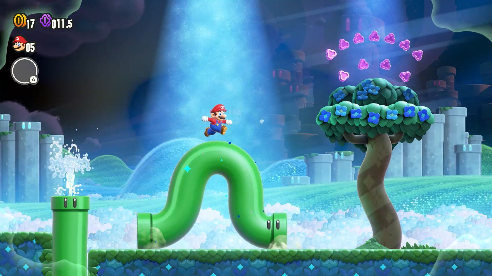
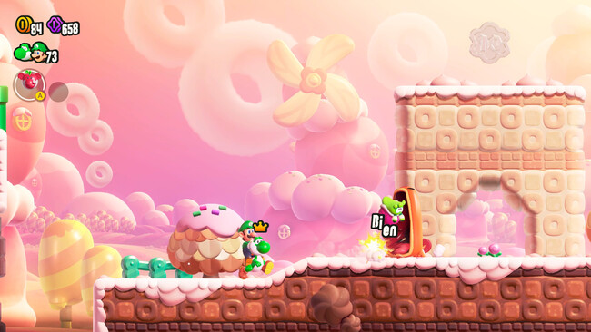

Análisis: Super Mario Bros. Wonder
El regreso a las plataformas 2D del fontanero más famoso del mundo es exactamente lo que su nombre indica: una maravilla. Super Mario Bros. Wonder rompe con la monotonía estética de la serie 'New' y nos regala la aventura más creativa de la franquicia en años.
La Magia de la Flor Maravilla
El gran acierto del juego reside en la imprevisibilidad. Tocar una Flor Maravilla transforma el nivel de formas absurdas y geniales: tuberías que cobran vida, estampidas de animales, perspectivas alteradas. Cada nivel es una sorpresa constante.

El diseño de niveles es de los mejores de la historia del 2D.
Conclusión
Divertido, visualmente exquisito y lleno de encanto. Un clásico instantáneo para disfrutar en solitario o en compañía.